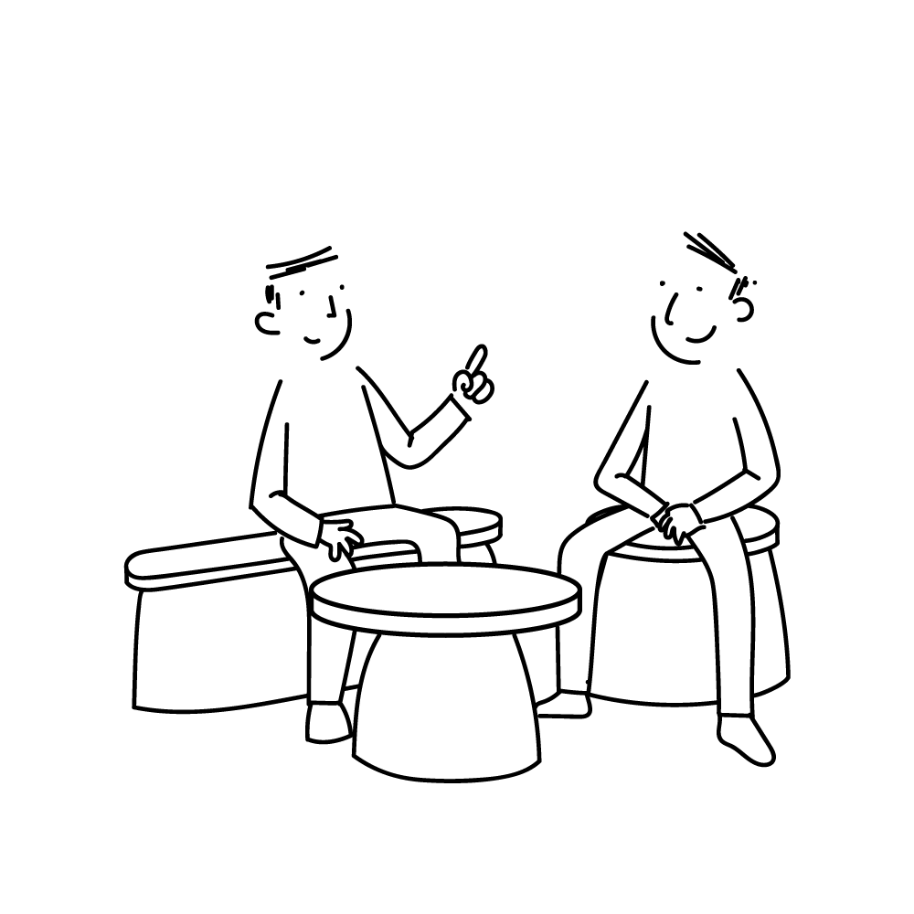
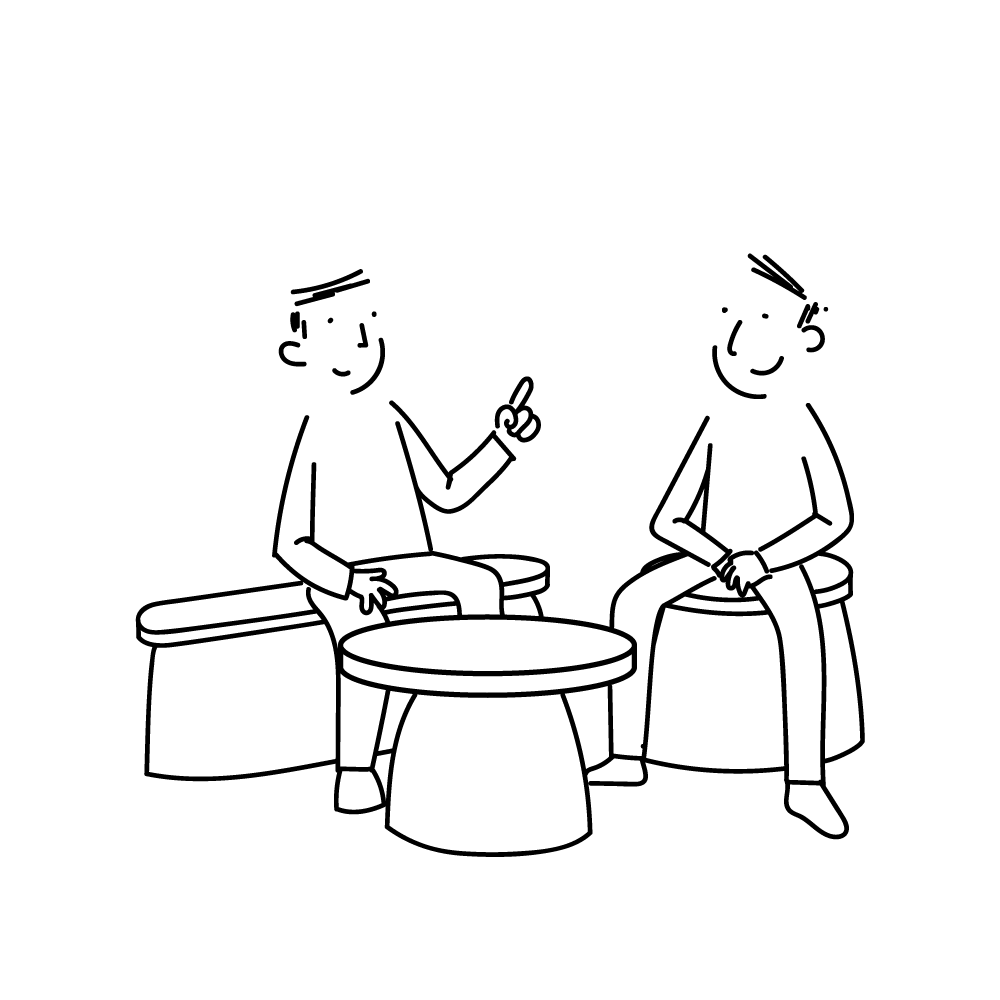
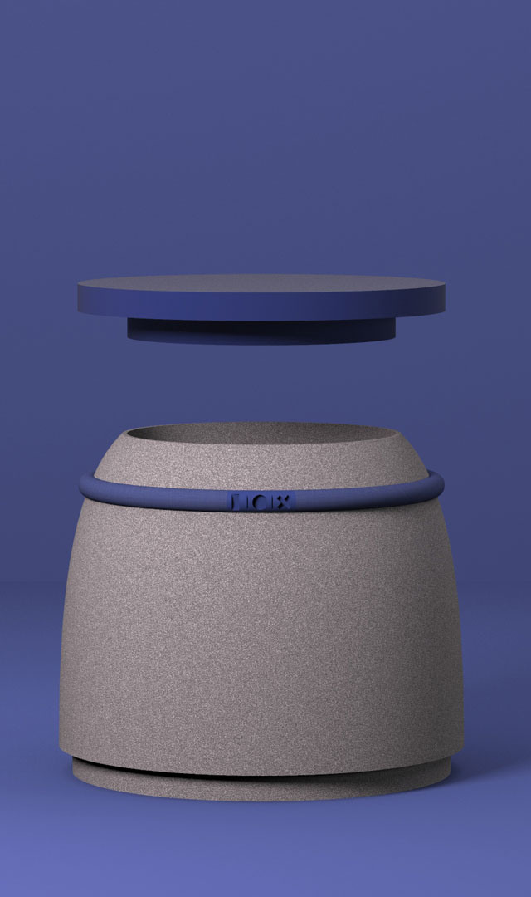
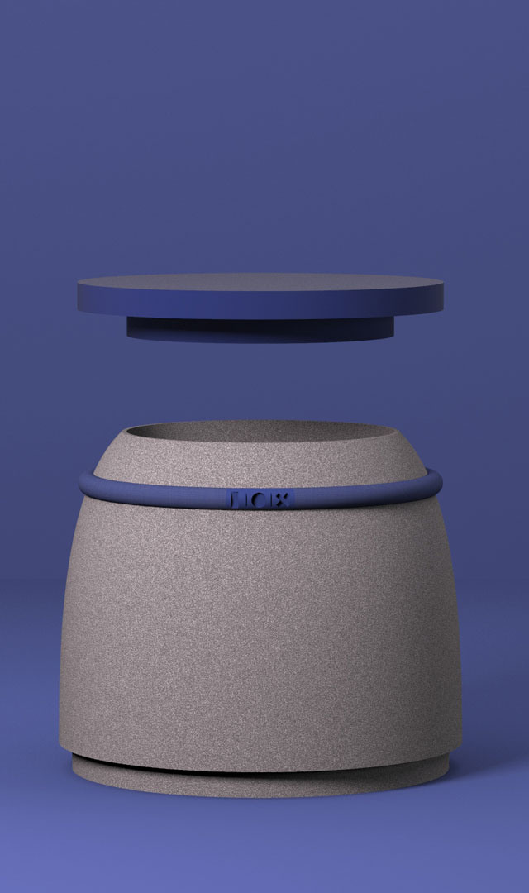

 

Pandore
Inspirée par les meubles à compartiments secrets, cette gamme, composée d'un tabouret, d'un banc et d'une table basse permet de ranger ses affaires à la discrétion de tous. Chaque meuble possède ainsi un compartiment en son sein que l'on peut verrouiller grâce à un cadenas analogique. Ce dernier devient plus discret par l'utilisation de symboles à la place de chiffres et est inséré dans un collier faisant le tour du meuble. Il est alors considéré comme un élément décoratif à première vue.
Contact
ah!